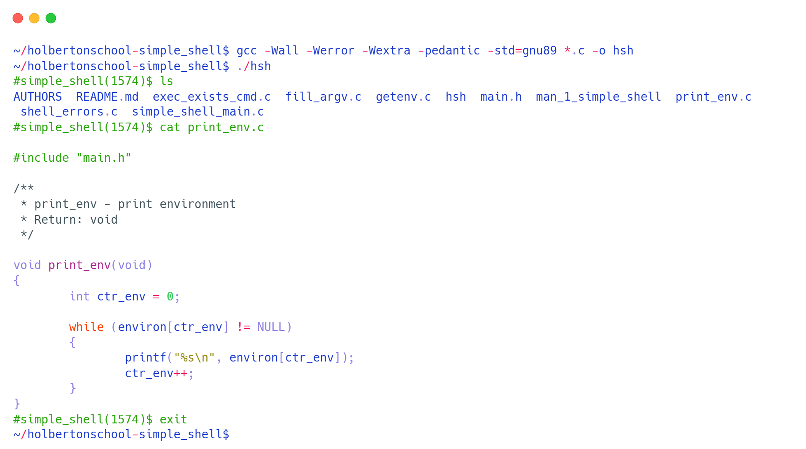
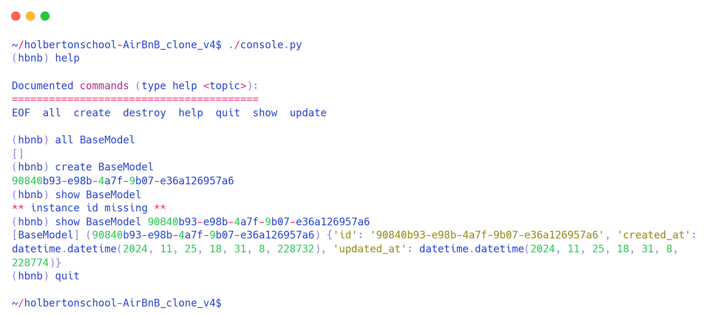
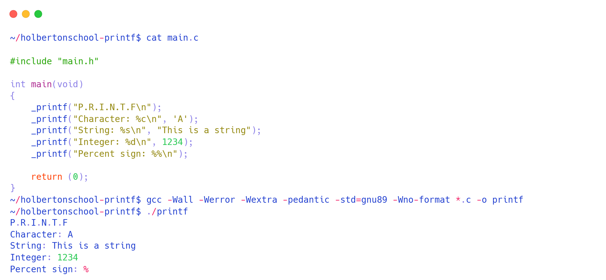

Simple Shell
Simple Shell is a simple, custom implementation of a "simple shell" in C, created as part of the Holberton School curriculum. The project includes a set of functions and system calls such as: execve, exit, fflush, fork, free, getline, getpid, isatty, malloc, perror, printf, fprintf, sprintf, putchar, signal, stat, strtok, wait, write
GitHub README
Airbnb Clone
Replica of the main features of the Airbnb platform using Python, HTML, CSS, MySQL, and JavaScript.
GitHub README

Printf
The goal of the Print F project is to recreate the printf function, available in the standard library in the C language. This function allows the display of characters on the user interface.
GitHub README
AlvoHive
The goal of the AlvoHIve project is to create a tool to extract data gathered during a penetration test and organize it into a document template. It includes charts, an executive summary, and a summary of the Common Vulnerabilities and Exposures (CVEs) identified.
GitHub README